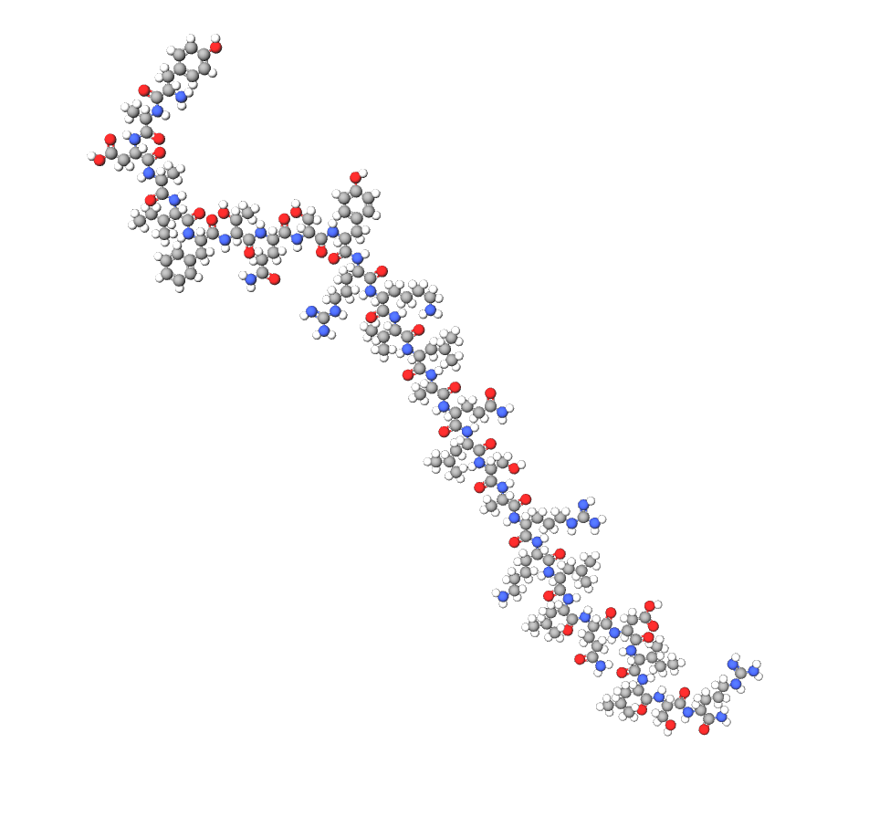

MOLECULAR COMPOSITION
C₁₆₅H₂₆₉N₅₁O₄₉
CJC-1295 (No DAC)
Growth Hormone Releasing Hormone Analog • DO NOT CONSUME • FOR RESEARCH PURPOSES ONLY
Price Upon Request
SCIENTIFIC OVERVIEW
MECHANISM OF ACTION
CJC-1295 (No DAC) is a synthetic analog of GHRH that stimulates the pituitary gland to release growth hormone. Unlike the DAC variant, it does not have extended half-life modifications, resulting in shorter GH pulses. It binds to GHRH receptors, increasing cyclic AMP and promoting GH secretion.
NEUROLOGICAL AND COGNITIVE PATHWAYS
- Influences hypothalamic-pituitary GH axis
- May modulate IGF-1 signaling in neural tissue
- Potentially enhances sleep-dependent memory consolidation via GH release
RESEARCH APPLICATIONS
Studied for GH-dependent growth, anti-aging research, body composition studies, and neuroendocrine signaling. For laboratory research only. Not for human consumption.
PHARMACOKINETICS
Half-life: ~30 minutes–1 hour
Peak plasma GH: 30–60 minutes post-administration
Clearance: Rapid proteolytic degradation
Bioavailability: Route-dependent
STORAGE & HANDLING
Store lyophilized peptide at 2–8°C. Reconstitute with sterile water and use immediately or refrigerate up to 14 days. Protect from light.
Limited availability • Verification required
This website is only a catalog. Request product for payment directions and contact info.